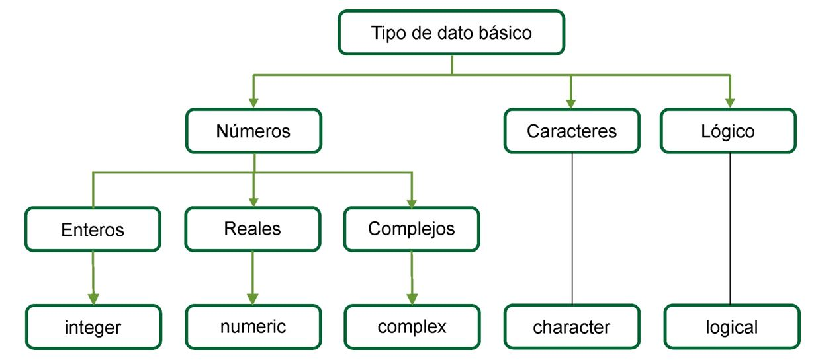

# esto es una línea de comentario y el intérprete no la ejecutaUnidad 1: Introducción a R
© 2025 Instituto Nacional de Epidemiología “Dr. Juan H. Jara” (ANLIS) - CC BY-NC 4.0


Estos materiales, que forman parte del Módulo 1 del Curso de Epidemiología Avanzada, no pretenden abarcar todos los temas relevantes que encontraríamos en un curso de lenguaje R, sino que persigue el fin de mostrar solo los más relevantes y necesarios del lenguaje para su aplicación en los módulos siguientes.
Qué es R?
El sitio oficial r-project.org dice que “R es un entorno de software libre para gráficos y computación estadística. Se compila y se ejecuta en una amplia variedad de plataformas UNIX, Windows y MacOS.”.
Profundizando en su descripción podemos decir, más técnicamente, que es un lenguaje de programación interpretado, orientado a objetos, multiplataforma y open source aplicado al manejo de datos estadísticos.
A continuación detallamos cada parte de la definición:
R es un lenguaje de programación estadístico
Si bien posee un entorno y se puede utilizar como calculadora avanzada o para simulación, no deja de ser elementalmente un lenguaje de programación, con sus estructuras y reglas de sintaxis, que posee una gran variedad de funciones desarrolladas con fines estadísticos.
R es un lenguaje Orientado a Objetos
Implementa los conceptos de la programación orientada a objetos y esto le permite ofrecer simpleza y flexibilidad en el manejo de datos. En R todo con lo que trabajamos son objetos: las variables, funciones, datos, resultados, etc. que pueden ser modificados por otros objetos
R es un lenguaje interpretado
No es necesario compilar los scripts de programación para construir ejecutables sino que directamente se ejecutan por medio del intérprete que R instala y devuelve resultados de forma inmediata.
R es multiplataforma (corre en Linux, Windows y Mac)
Se puede instalar en diferentes sistemas operativos como Linux, Windows y Mac. En todos ellos funciona de la misma manera, es decir que nuestros scripts pueden correr en cualquier plataforma sin cambiar nada de ellos.
R es Open Source y se distribuye bajo licencia GNU - GPL
Esto quiere decir que se distribuye gratuitamente bajo licencia GNU (General Public License) – GPL y que los usuarios tienen la libertad de usar, estudiar, compartir (copiar) y modificar el software.
Breve historia del lenguaje
R es un sistema que fue desarrollado a partir del lenguaje S que a su vez tiene sus orígenes en Bell Labs de la AT&T (actualmente Lucent Technologies) de mediados de la década del ’70. Posteriormente, S fue vendido y dio origen a una versión propietaria denominada S-Plus que es comercializada por Insighful Corporation.
En 1995 dos profesores de estadística de la Universidad de Auckland, en Nueva Zelanda Ross Ihaka y Robert Gentleman, iniciaron el “Proyecto R”, con la intención de desarrollar un programa estadístico inspirado en el lenguaje S pero de dominio público.
Aunque se dice que R es un dialecto de S existen diferencias importantes en el diseño de ambos lenguajes.
El software está desarrollado en lenguaje C++ con algunas rutinas agregadas en Fortran) y su nombre se debe a la letra con la que inician los nombres de pila de sus autores (Ross y Robert).
Actualmente R es mantenido por un grupo internacional de desarrolladores voluntarios denominado Core Development Team.
Scripts
Un script es un archivo de texto plano con una lista secuencial de funciones y comandos del lenguaje R para ser ejecutado por el intérprete de R.
Script se puede traducir como guión, archivo de órdenes, archivo de procesamiento por lotes o archivo de sintaxis.
Generalmente se crea en editores especiales y/o en cualquier software para generar texto. Se almacena en un archivo que puede ser leído, modificado, guardado y se puede ejecutar completo o línea a línea.
Poseen una cualidad muy provechosa: son re-utilizables, adaptándolos a otras necesidades.
Características de los scripts de R:
R posee una sintaxis textual y como cualquier lenguaje de programación es precisa.
La exactitud en la escritura de comandos y funciones incluye la distinción entre mayúsculas y minúsculas. (se dice entonces que es “case sensitive”)
Todas las líneas de R en la consola comienzan con el prompt (*) >
* Símbolo que aparece en la pantalla de la computadora indicando que el sistema está esperando información del usuario o que el sistema está listo para recibir instrucciones del usuario.
Documentación de los scripts de R:
La documentación es una tarea de mucha importancia en cualquier lenguaje de programación, ya que nos permite entender que estamos haciendo en el script, también nos sirve para el futuro mantenimiento o para la reutilización del código elaborado, tanto para otros usuarios como para nosotros mismos.
La forma de documentar los scripts de código en R es utilizando comentarios. Toda línea que comienza con el símbolo # es entendido por el interprete como un comentario y los caracteres que sigan a ese símbolo no sean tenidos en cuenta cuando se ejecute ese código:
Así que a la hora de documentar es preferible abusar de estos comentarios que no utilizarlos.
Funciones
Los comandos u órdenes elementales de R se denominan funciones. A algunas se las llama “integradas” porque están incluidas en el núcleo (R base) y sus nombres están reservados.
También podemos utilizar otras pertenecientes a librerías (paquetes) que se pueden instalar y activar.
La mayoría de las ofrecidas en los paquetes (librerías) están elaboradas con R, dado que todos los usuarios podemos crear nuevas funciones con el mismo lenguaje.
Toda función tiene un nombre y normalmente recibe argumentos o parámetros obligatorios u opcionales, que deben ser escritos entre paréntesis y separados por comas. Incluso algunas de ellas que no tienen asociado argumentos necesitan, en su sintaxis, a los paréntesis ().
Siempre una función devuelve un resultado, un valor o realiza una acción:
nombre_de_la_función(arg_1, arg_2, arg_n)Como el interprete de R no permite errores en la sintaxis de las expresiones, debemos atender a los siguientes puntos a la hora de escribirlas:
La sintaxis habitual de una función y sus argumentos es la siguiente:
funcion(arg1, arg2, arg3,...)
Los títulos de los argumentos pueden escribirse y mediante un igual agregar el valor correspondiente. También se puede omitir el título del argumento y escribir directamente el valor, pero en este caso, hay que respetar el orden definido por la función:
funcion(arg1 = 32, arg2 = 5, arg3 = 65,...)es igual a hacer:
funcion(32, 5, 65,...)siempre que se respete el mismo orden.
Con los argumentos se deben cumplir las mismas reglas que en todo el lenguaje. Los valores numéricos, lógicos, especiales y objetos van escritos en forma directa y cuando escribimos caracteres (texto) van necesariamente encerrados entre comillas:
funcion(arg1 = 3, arg2 = NA, arg3 = TRUE, arg4 = "less", arg5 = x, ...)
Librerías (paquetes)
Las librerías son grupos de funciones empaquetados que se pueden instalar y utilizar en el análisis de datos. Habitualmente se agrupan por tema o similitud de funciones.
Estos paquetes se pueden descargar directamente del repositorio oficial de CRAN en Internet (similar al uso de los repositorios de Linux) o bien descargar en formato .zip para luego instalar y usar.
Se pueden activar y desactivar en cualquier momento del análisis.
Algunos poseen dependencias de otros paquetes que serán necesarios para que funcione.
Errores y advertencias
El lenguaje es muy preciso en su sintaxis y equivocarse en la forma de escribir una función o cualquier otro objeto produce respuestas de error del interprete de R que es habitual cuando iniciamos el aprendizaje.
La exactitud en la escritura de comandos y funciones incluye la distinción entre mayúsculas y minúsculas. Es decir, que no es lo mismo una ‘a’ que una ‘A’.
Existen tres grupos de mensajes de error:
- error de sintaxis
- error de objeto no encontrado
- otros errores
Se dice que hay un error de sintaxis, cuando ejecutamos una línea de código que el motor de R no puede interpretar debido a que algo está mal escrito.
Habitualmente los errores de sintaxis se deben a que falta o sobra algún elemento necesario en la estructura de una función (comas, parentesis, llaves, corchetes, comillas, etc.)
Por ejemplo la función rep() repite valores una cantidad de veces. Tiene dos argumentos, x donde se coloca el valor a repetir y times donde se define la cantidad de veces:
rep(x = 3, times = 4) # repetimos 4 veces 3 con rep()[1] 3 3 3 3Si nos olvidamos de cerrar el paréntesis…
rep(x = 3, times = 4
Error: Incomplete expression: rep(x = 3, times = 4Si nos olvidamos de separar los argumentos con la coma:
rep(x = 3 times = 4)
Error: unexpected symbol in "rep(x =3 times"Si en lugar de escribir x como primer argumento y escribimos otra letra…
rep(y = 3, times = 4)
Error in rep(y = 3, times = 4) :
attempt to replicate an object of type 'symbol'Si escribimos mal la función…
rop(x = 3, times = 4)
Error in rop(x = 3, times = 4) : no se pudo encontrar la función "rop"Esta última posibilidad es similar a un “objeto no encontrado” por error de sintaxis.
Los mensajes de error en general y sobre todo al principio pueden parecer extraños y difíciles de entender, pero con un poco de práctica podemos inferir donde está el problema.
Los errores de objetos no encontrados pueden tener una de varias causas:
- el nombre no se escribió correctamente (p.ej.: sintaxis, mayúsculas / minúsculas)
- el paquete o archivo que contiene el objeto no ha sido cargado
- olvidamos poner comillas en un lugar que corresponde
- otros motivos posibles
Volvamos al ejemplo anterior, ahora repitiendo un valor tipo character:
rep(x = "A", times = 4) # repetimos 4 veces "A" con rep()[1] "A" "A" "A" "A"Si olvidamos las comillas…
rep(x = A, times = 4) # repetimos 4 veces A con rep()
Error: objeto 'A' no encontradoAdvertencias
Una advertencia no es algo tan serio, como un error, o al menos no lo parece, ya que esta permite que la función se ejecute igual. Pero puede ocurrir que ignorar una advertencia llegue a ser algo muy serio, si esto implica que la salida de la función es equivocada.
Por lo tanto, es una buena política entender los mensajes de advertencia para ver si indican problemas para preocuparnos o no.
Resumiendo:

Creación de objetos
Todas las declaraciones donde se crean objetos, tienen este símbolo de asignación <-
nombre_objeto <- valorVeámoslo en un ejemplo:
a <- 1En este caso asignamos el valor 1 al objeto a. El objeto a es un vector de una posición (un solo valor).
Si llamasemos al objeto a, el interprete nos devuelve el valor asignado previamente:
a[1] 1Observemos que además de devolvernos el valor aparece delante un 1 entre corchetes [1]. Este número es la ubicación o índice del comienzo del objeto, que en este caso tiene una sola posición.
Estructuras de datos
Los objetos contenedores de datos más simples pertenecen a cinco clases que se denominan atómicas y que son los siguientes tipos de datos:
- integer (números enteros)
- numeric (números reales)
- complex (números complejos)
- character (cadena de caracteres)
- logical (lógicos o booleanos – toman valores por si o no)

Sin embargo, cada una de estas clases de datos no se encuentran de manera aislada, sino encapsulados dentro de la clase de objeto operacional más básica del lenguaje a la que se denomina vector.
Rstudio utiliza un sistema de colores para ayudar a diferenciar los tipos de valores, donde azul oscuro son números, celeste palabras reservadas como valores especiales y lógicos, verde para caracteres y negro para objetos (en el theme = Textmate que viene por defecto. En otros temas los colores cambian pero se diferencian entre sí).
Vector
Un vector es un conjunto de valores (números o símbolos), todos del mismo tipo ordenados de la forma (elemento 1, elemento 2, … , elemento \(n\)) y \(n\) es la longitud o tamaño del vector.
Surge de la definición dos términos importantes: el tipo y la longitud.
Todos los objetos de datos tienen estos dos atributos intrínsecos.
- el tipo, que puede ser integer, numeric, chacacter, complex y logical
- la longitud, que es el número de elementos que contiene el objeto.
El vector más simple es el que contiene un dato, podría ser numérico de un solo dígito. El tipo sería numeric y la longitud 1:
vec1 <- 1
vec1[1] 1Otro vector más grande por ejemplo podría ser (1, 5, 2). En este caso también es del tipo numeric pero tiene una longitud de 3 elementos (3 posiciones que integran el vector):
vec2 <- c(1, 5, 2)
vec2[1] 1 5 2Como vemos, para concatenar estos tres valores numéricos usamos la forma c(). Esta c es una función de R, justamente para concatenar. (todo lo que aparece siempre antes de paréntesis es una función). Dentro de la función los valores van separados por comas.
Aquí podemos señalar otra característica, según la definición de vector, la colección de elementos se encuentra ordenada, por lo que en nuestro ejemplo la primera posición la ocupa el 1, la segunda el 5 y la tercera el 2. Como el orden importa, si tuviese otro vector (5,1,2), a pesar de tener los mismos elementos no sería el mismo vector porque están ordenados de forma diferente.
Para ver la longitud del vector usamos:
length(vec2)[1] 3Nos informa que vec2 tiene 3 elementos.
Asimismo podemos ver que los datos almacenados en este segundo ejemplo cumplen con la definición en lo que respecta al tipo de dato, ya que cada elemento es del mismo tipo (numeric).
Para conocer el tipo de dato ejecutamos:
class(vec2)[1] "numeric"Veamos un ejemplo de asignación de otro tipo de dato atómico, como es el character:
vec3 <- "Hola"
vec3[1] "Hola"Siempre que escribamos contenido de tipo caracter debemos hacerlo entre comillas. En este caso generamos el vector vec3 con el contenido “Hola”. A pesar de ser una palabra que, por supuesto, esta compuesta de varios caracteres, dentro del vector vec3 esta ocupa una sola posición:
length(vec3)[1] 1Respecto al tipo de dato si usamos la función class() tendremos:
class(vec3)[1] "character"Factor
Un factor es un objeto especialmente diseñado para contener datos categóricos y se asocia particularmente con las variables cualitativas.
En su estructura interna está compuesto por dos vectores, en uno almacena índices enteros y el segundo es un vector de caracteres que contiene las categorías (llamada niveles), a los que hace referencia el primer vector.
Existen de dos tipos: factores nominales y factores ordinales. En el caso del segundo se establece un orden en los niveles.
Normalmente, obtenemos un tipo factor de convertir un vector u otro tipo de objeto con caracteres, pero para mostrar un ejemplo lo realizamos con la función factor():
factor1 <- factor(x = c("a", "b", "a", "c", "b", "a"),
levels = c("a", "b", "c"))
factor1[1] a b a c b a
Levels: a b cEn el ejemplo, creamos el objeto factor1 con 6 elementos caracteres y tres niveles sin orden.
Por ultimo diremos del factor, que además de su practicidad, en muchos casos algunos argumentos de funciones de R exigen que las variables se encuentren en este formato.
Dataframe
Un dataframe es un objeto cuya finalidad es contener conjuntos de datos. Se asemeja a una tabla que tiene filas y columnas (dos dimensiones), donde cada columna puede almacenar elementos de diferentes tipos.
Además las columnas suelen tener nombres únicos y podemos referenciarlas por estos nombres, como si fueran variables del conjunto de datos.
Es el tipo de objeto que utilizamos para almacenar información leída de tablas de datos provenientes de archivos externos (formato texto separado por comas, Excel, etc) y con las cuales acostumbramos a trabajar en el análisis.
Desde el punto de vista de su estructura, todo dataframe esta conformado por una serie de vectores de la misma longitud ubicados verticalmente uno al lado de otro.
Podemos verlo en la siguiente porción de código:
HC <- c("F324", "G21", "G34", "F231")
edad <- c(34, 32, 34, 54)
sexo <- c("M", "V", "V", "M")
df1 <- data.frame(HC, edad, sexo)
df1 HC edad sexo
1 F324 34 M
2 G21 32 V
3 G34 34 V
4 F231 54 MCreamos tres vectores con datos de supuestos individuos, su historia clinica, la edad y el sexo. Luego mediante la función data.frame() “unimos” esos vectores en forma vertical para formar un dataframe de 3 variables y 4 observaciones.
Existen otras estructuras de datos que aparecen en la siguiente figura. Las más habituales en nuestro trabajo son los vectores y los dataframes. Los factores serán necesarios cuando tengamos que especificar distintos órdenes de niveles.

Operadores en R
Además de funciones, el lenguaje R cuenta con operadores de uso relativamente intuitivo, que permiten realizar operaciones de diferentes tipos con los objetos que contienen datos.
Operadores artiméticos
Operador | Descripción |
|---|---|
+ | Suma |
- | Resta |
* | Multiplicación |
/ | División |
^ | Potencia |
%% | Módulo |
%/% | División de enteros |
Los operadores aritméticos se utilizan como si el lenguaje fuese una calculadora:
2 + 5[1] 73 - 2[1] 19 * 3[1] 2710 / 2[1] 55 ^ 2[1] 25También se pueden hacer operaciones con los objetos que almacenan valores numéricos:
a <- 3
b <- 6
(a + b) * b[1] 54Y funciona con objetos con más de un elemento, aplicando artimética vectorial, donde las operaciones se realizan elemento a elemento:
a <- c(1, 2, 3)
a * 3[1] 3 6 9O bien, con operaciones entre los objetos, donde se realiza entre los elementos de la misma posición:
a <- c(1, 2, 3)
a * a[1] 1 4 9Operadores relacionales
Operador | Descripción |
|---|---|
< | Menor a |
> | Mayor a |
<= | Menor o igual a |
>= | Mayor o igual a |
== | Igual a |
!= | No igual a |
Habitualmente estos operadores se utilizan asiduamente en expresiones para indicar relaciones entre valores.
Podemos ver su funcionamiento en el ejemplo siguiente:
a <- c(3, 8, 2)
a == c(3, 4, 5)[1] TRUE FALSE FALSEEl lenguaje evalúa las comparaciones que hace el operador relacional igual (en este caso) y en aquellos valores que coinciden devuelve TRUE y en los que no hay coincidencia devuelve FALSE.
Lo mismo sucede con los otros operadores relacionales:
a <- c(4, 8, 10)
a > 8[1] FALSE FALSE TRUEa < 8[1] TRUE FALSE FALSEa != 8[1] TRUE FALSE TRUEOperadores lógicos
Operador | Descripción |
|---|---|
! | NOT |
& | AND booleano |
&& | |
| | OR booleano |
|| |
Cuando queremos conectar algunas de las expresiones relacionales hacemos uso de estos operadores lógicos típicos (AND, OR, NOT).
Para ejemplificar podemos hacer:
a <- c(1:8)
a[1] 1 2 3 4 5 6 7 8(a > 3) & (a < 7)[1] FALSE FALSE FALSE TRUE TRUE TRUE FALSE FALSEEn el caso anterior usamos el operador & como conector AND de dos expresiones relacionales donde el lenguaje devuelve TRUE en el rango mayor a 3 y menor a 7 (valores 4,5 y 6).
Valores especiales en R
Existen algunos valores especiales para datos con expresiones reservadas en R, entre ellos encontramos los valores NA, NaN, Inf y NULL.
Operador | Significado | Descripción |
|---|---|---|
NA | Not available | Es la forma de expresar a los valores perdidos o faltantes (missing values) |
NaN | Not a number | Utilizado para resultados de operaciones que devuelven error numérico |
Inf | Infinity | Valor infinito (positivo) |
-Inf | Infinity | Valor infinito (negativo) |
NULL | Null | Valor nulo |
El más relevante de estos valores especiales es el NA que sirve para indicar que no hay valor en esa posición o elemento de un objeto.
Secuencias regulares
Además de la concatenación con la función c() existen tres formas comunes de generar secuencias regulares.
La primera es mediante un operador que entre dos valores produce un intervalo secuencial de enteros que puede ser ascendente o descendente. El operador es : y se usa de la siguiente forma:
1:10 [1] 1 2 3 4 5 6 7 8 9 1010:1 [1] 10 9 8 7 6 5 4 3 2 1Otra manera es por medio de la función seq() que tiene como argumentos principales from, to y by:
seq(from = 1, to = 20, by = 2) [1] 1 3 5 7 9 11 13 15 17 19La ejecución de la línea anterior produce una secuencia de números comenzando en el 1 y finalizando en el 20 de dos en dos.
Algunos otros ejemplos de la misma función pueden ser:
seq(from = 0.1, to = 0.9, by = 0.1)[1] 0.1 0.2 0.3 0.4 0.5 0.6 0.7 0.8 0.9seq(from = -5, to = 5, by = 1) [1] -5 -4 -3 -2 -1 0 1 2 3 4 5seq(from = 300, to = 0, by = -50)[1] 300 250 200 150 100 50 0Finalmente la tercer posibilidad que vamos a mostrar es la función rep() que duplica valores. Su forma más sencilla es rep(x, times=Nº) que coloca un Nº de copias de x, una tras otras.
Algunos ejemplos de la función:
rep(x = 2, times = 5)[1] 2 2 2 2 2rep(1:4, 5) # combinada con el operador : [1] 1 2 3 4 1 2 3 4 1 2 3 4 1 2 3 4 1 2 3 4rep(c(4.5, 6.8, 7.2), 2) # combinada con la función c()[1] 4.5 6.8 7.2 4.5 6.8 7.2Índices
R implementa una manera eficiente y flexible de acceder selectivamente a elementos de un objeto basado en una indexación interna.
La notación para identificar un índice es encerrarlo entre corchetes, entonces si tenemos un vector x con varios elementos y queremos acceder al segundo de ellos escribimos x[2].
Esta forma de acceder a los elementos de los distintos objetos que almacenan datos nos permite realizar muchas operaciones desde el simple llamado hasta seleccionar, eliminar o modificar valores.
Veamos algunos ejemplos:
x <- c("a","b","c","d","e") # generamos un vector x con 5 letras
x[1] # llamamos a la primer posición y nos devuelve su valor [1] "a"x[3] # llamamos a la tercer posición y nos devuelve su valor[1] "c"x[c(1,3)] # llamamos a las posiciones 1 y 3 juntas mediante c()[1] "a" "c"x[-c(1, 4)] # llamamos a las posiciones menos la 1 y la 4[1] "b" "c" "e"y <- c(1, 2, 5) # creamos otro vector y con los valores 1,2 y 5
x[y] # utilizamos el vector y como índice y nos devuelve [1] "a" "b" "e"x[2] <- "h" # asignamos el valor “h” a la posición 2 del vector x
x[1] "a" "h" "c" "d" "e"z <- x[-5] # creamos el vector z eliminando la posición 5 de x
z[1] "a" "h" "c" "d"Observando estos ejemplos podemos imaginar las posibilidades que se abren dentro de cada tipo de estructura de datos para trabajar con estos índices, lo que hace muy potente al lenguaje.
Cuando los aplicamos a estructuras de dos dimensiones como matrices (incluidas tablas) y dataframes el formato tiene un orden específico:
nombre[índice de fila , índice de columna]
Gestión de factores
Cuando presentamos las distintas estructuras de datos deciamos que a los factores suelen obtenerse de convertir vectores u otro tipo de objeto con caracteres.
Para entenderlo partamos de un vector con datos categóricos:
respuesta <- c("Si", "No", "No", "Si", "Si", "Si", "No")Creamos un vector llamado respuesta con 7 elementos del tipo caracter donde se repiten las categorías No y Si.
Podemos confirmar que estamos frente a un vector y que el contenido es character:
is.vector(respuesta) # preguntamos si sexo es un vector[1] TRUEclass(respuesta) # visualizamos el tipo de dato de sexo[1] "character"Para crear un factor a partir de este vector debemos utilizar la función factor():
respuesta <- factor(respuesta)
respuesta[1] Si No No Si Si Si No
Levels: No SiEn la salida observamos que además de los siete elementos aparecen los niveles asumidos automáticamente bajo el título Levels.
Si queremos comprobar el tipo de objeto en que se convirtió “respuesta”, encontraremos:
is.vector(respuesta) # preguntamos si respuesta es un vector[1] FALSEis.factor(respuesta) # preguntamos si respuesta es un factor[1] TRUEclass(respuesta) # visualizamos el tipo de dato de respuesta[1] "factor"Pertenece a la clase factor, pero aunque nosotros observamos que su contenido son palabras, su tipo nos dice que es numérico. A que se debe esto? Veamos:
str(respuesta) Factor w/ 2 levels "No","Si": 2 1 1 2 2 2 1Ejecutando la function str(), que nos devuelve la estructura de los objetos, podemos ver que respuesta tiene dos niveles y los valores internos de los elementos son todos números 1 y 2, donde 1 corresponde a No y 2 a Si.
Esto significa que la estructura de los factores está compuesta por dos vectores, uno numérico que funciona como índice de enteros, que sustituye al vector de caracteres original, y el otro es un vector de caracteres, que contiene los niveles (Levels) o categorías, a los que hace referencia el primer vector.
Para ver solo los niveles o categorías del factor podemos usar:
levels(respuesta)[1] "No" "Si"En estos factores nominales donde no importa el orden, la función factor() implementa el orden alfabético para determinar a qué índice numérico pertenece cada categoría. Es claro en el ejemplo que a No le asigna el 1 y a Si el 2.
Pero si nos encontramos frente a una variable cualitativa ordinal vamos a necesitar indicarle a la función cual es el orden de las categorías.
Vamos al siguiente ejemplo:
salud <- c(4, 3, 1, 3, 2, 2, 3, 3, 1)
salud[1] 4 3 1 3 2 2 3 3 1Tenemos en el vector salud algunos códigos numéricos que representan nivel de salud de personas registradas por una encuesta donde 1 significa mala salud, 2 regular, 3 buena y 4 muy buena.
Vamos a crear el factor nivsalud a partir de este vector, así:
nivsalud <- factor(salud,
label = c("Mala", "Regular", "Buena", "Muy buena"),
levels = 1:4)
nivsalud[1] Muy buena Buena Mala Buena Regular Regular Buena
[8] Buena Mala
Levels: Mala Regular Buena Muy buenaPara construir el nuevo factor aplicamos dos argumentos (además del vector original). Por un lado con label ingresamos las “etiquetas” de cada categoría y luego con levels los niveles como se encuentran en el vector original (1,2,3,4).
Aquí es necesario usar estos argumentos para conseguir resultados similares al ejemplo del factor sexo porque a diferencia de ese primer factor que creamos nivsalud surge de un vector que tiene elementos con valores numéricos y no las palabras de las categorías como Femenino y Masculino.
Hasta aquí hemos creado un factor pero si miramos sus niveles no encontraremos señales que sigan un orden específico:
levels(nivsalud)[1] "Mala" "Regular" "Buena" "Muy buena"Para indicarle orden hay que agregar otro argumento dentro de la función anterior:
nivsalud <- factor(salud,
label = c("Mala", "Regular", "Buena", "Muy buena"),
levels = 1:4, ordered = T)
nivsalud[1] Muy buena Buena Mala Buena Regular Regular Buena
[8] Buena Mala
Levels: Mala < Regular < Buena < Muy buenaAl sumar ordered=T le estamos diciendo que los niveles tienen orden y estos se pueden ver en los Levels donde Mala es < a Regular y este es < a Buena y así, hasta el nivel Muy buena.
Gestión de dataframes
La estructura de datos, usada dentro del lenguaje, para almacenar datos leídos de fuentes externas (archivos separados por comas, planillas de calculo, etc.) es el dataframe.
Vamos a crear un dataframe llamado datos con 4 variables de 5 registros, la primera será un identificador ID numérico entero correlativo, la segunda variable EDAD, la tercera SEXO codificada como V para varón y M para mujer y la tercera TRABAJA de formato lógica donde T (TRUE) corresponde a “Si trabaja” y F (FALSE) a “No trabaja”:
id <- 1:5 # construimos el vector id
edad <- c(23, 43, 12, 65, 37) # construimos el vector edad
sexo <- c("V", "M", "M", "V", "M") # construimos el vector sexo
trabaja <- c(T, T, F, F, T) # construimos el vector trabaja
datos <- data.frame(id, edad, sexo, trabaja) # construimos el dataframe datosTengamos en cuenta que habitualmente leemos archivos externos que serán dataframes en R y que esta forma de creación de la estructura de datos es solo con fines del ejemplo.
Aplicamos algunas de las funciones que vimos con la matrices:
ncol(datos) # pedimos el número de columnas (variables)[1] 4nrow(datos) # pedimos el número de filas (registros u observaciones)[1] 5dim(datos) # pedimos las dimensiones del dataframe (observaciones,variables)[1] 5 4También podemos visualizar como se compone el objeto datos aplicando str() que devuelve la estructura interna de cualquier objeto en R.
str(datos)'data.frame': 5 obs. of 4 variables:
$ id : int 1 2 3 4 5
$ edad : num 23 43 12 65 37
$ sexo : chr "V" "M" "M" "V" ...
$ trabaja: logi TRUE TRUE FALSE FALSE TRUENos informa que:
- el objeto
datoses un dataframe con 5 observaciones y 4 variables - la variable id es entero (int)
- la variable edad numérica (num)
- la variable sexo de tipo caracter (chr)
- la variable trabaja de tipo lógica (logi).
- además nos muestra los primeros valores de cada variable, que aquí casualmente coinciden con todos los registros que hay dentro del dataframe.
Cuando necesitemos llamar al contenido de alguna columna o variable del dataframe debemos utilizar la notación:
<nombre del objeto dataframe>$<nombre de la variable>
Por ejemplo, si queremos mostrar el contenido de la variable sexo del objeto datos hacemos:
datos$sexo[1] "V" "M" "M" "V" "M"Nos muestra los 5 valores que tiene cargado.
En cuanto al sistema de indexación podemos acceder a elementos internos del dataframe de las siguientes formas:
datos[,3] # pedimos la tercer variable (sexo)[1] "V" "M" "M" "V" "M"Observemos que las dos ultimas salidas son idénticas, dado que muestran todas las observaciones de la variable sexo, aunque la solicitud sea de manera diferente.
Algunos otros casos de uso de indice:
datos[1,2] # observación 1 variable 2[1] 23datos[4,] # observación 4 todas las variables id edad sexo trabaja
4 4 65 V FALSEdatos[1:3,3] # observación 1,2 y 3 variable 3[1] "V" "M" "M"datos[5, c(1,4)] # observación 5 variables 1 y 4 id trabaja
5 5 TRUEPor último, vamos podemos mostrar y gestionar los nombres de las variables con la función names():
names(datos)[1] "id" "edad" "sexo" "trabaja"Fórmulas
En R las fórmulas son utilizadas generalmente para describir modelos, formato que vamos a utilizar durante toda la cursada.
Estas formulas se escriben con operadores como ~ , + , *, etc. y se emplean para especificar regresiones, anovas y contrastes de hipótesis, además de algunos gráficos.
Formula genérica:
Aquí la formula está dada por el operador “~”; a la izquierda está la variable de respuesta o dependiente, a la derecha la o las variables explicativas o independientes. El esquema general es el siguiente:
variable depedendiente o de respuesta ~ variables independientes o explicativas
El símbolo “~” (virgulilla) debería leerse como “es modelado por” o “es modelado como una función de”.
Por ejemplo, en una regresión lineal se utiliza la función base lm() y el argumento principal de esta función es una formula:
regresion_lineal <- lm(variable.de.respuesta ~ variables.explicativas, data = datos)
además de la formula hay un argumento llamado data que es imprescindible para indicarle a R de donde debe sacar los datos para realizar la regresión.
La siguiente tabla muestra los usos de los los operadores más comunes dentro de una formula:
Operador | Ejemplo | Descripción |
|---|---|---|
+ | +x | Incluye la variable x |
- | -x | Excluye la variable x |
: | x : z | Incluye la interacción de la variable x con z |
* | x * z | Incluye ambas variables y la interacción entre ellas |